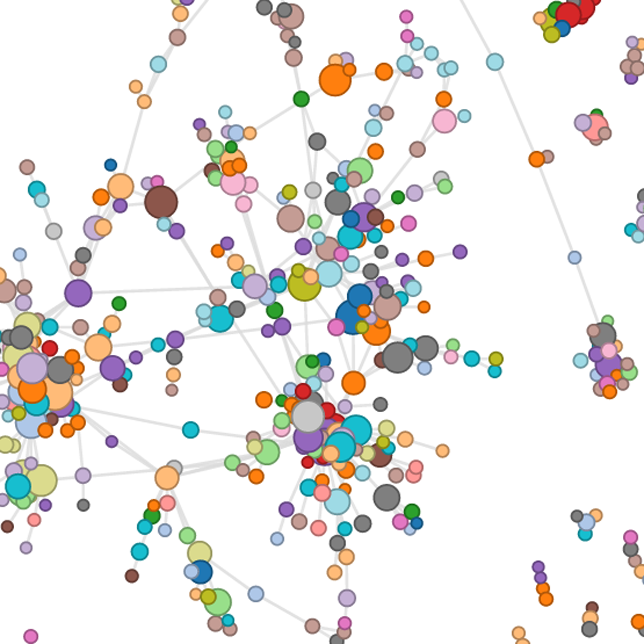
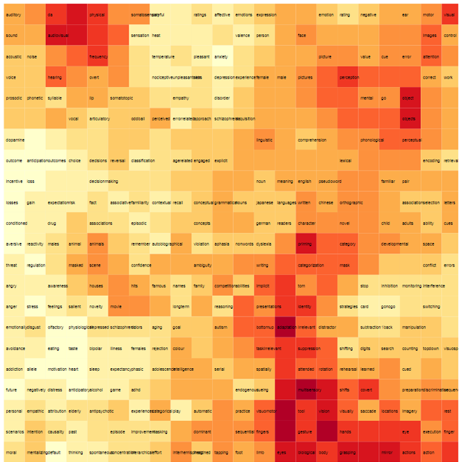

The web portal presents the user with two methods of entry to explore the data: a dynamic collaboration network, and an interactive brain lattice. From the interactive brain lattice, the user can click a behavioral term to return a list of authors that are most highly matched to the node, meaning that the brain map that represents the author’s published work is similar to the NeuroSynth brain map for that term. From the collaboration network the user can search for and go directly to a “Single Author View” page, which includes an “Author Brain Lattice” (Section 3.5.1), a list of similar authors (Section 3.5.2), and publications alongside activation coordinates that were used in the analysis (Section 3.5.3). The collaboration network has links between PI nodes that represent actual collaborations, and coloring that reflects similarity of published activation reports.
We have created AuthorSynth, a novel web interface tool that both summarizes authors’ work based on activation reports, and qualitatively visualizes the work in an intuitive way - on a 2D, colorful brain lattice. This work demonstrates that the integration of meta-analytical methods with machine learning and network analysis can provide what we believe to be a useful, relevant way to identify researchers with similar published work. While the focus of this initial work is on the development of the tool’s infrastructure, the current web interface should be of interest to researchers with a substantial enough body of work to have publications in the database, and to researchers that are searching for collaboration opportunities. We believe this work is an important step in the right direction to better harness methods from neuroimaging informatics to assist with collaboration to move the field move forward, and we are excited to pursue further analysis with our infrastructure.
This simple framework will be a powerful starting point for greater analysis of the network itself, and for the development of advanced applications. Future applications could identify gaps in the study of the brain based on published coordinates, generate institution-specific sub-networks, or map data and funding sources onto publications to better quantify the productivity of the neuroscience community as a whole.
What is AuthorSynth
AuthorSynth is a prototype framework for neuroscience researchers to see and find collaborators. It is a network to show actual collaborations based on co-publication, and a brain lattice to find researchers based on behavioral terms studied. Both of these visualizations lay on top of a database of single author contributions. Read more about the network, the brain lattice, or the single author contributions.
What does the Network show?
The network shows neuroscience author collaboration based on publications in the NeuroSynth database for PIs, defined by being last author on a paper and having at least two publications. Links are defined between PIs with at least 2 publications together. Coloring of the network is determined by similarity based on comparison of actual activation reports (x y z voxel values). The threshold of this coloring can be adjusted to generate more or fewer groups. An actual link represents a real collaboration, while similar coloring represents potential collaborations. Clicking on a link navigates to the single author page.

What does the Brain Lattice show?
The brain lattice is a novel visualization strategy, a self-organizing map (SOM), that maps neuroscience author activation reports to 525 behaviorally relevant terms. You can click on a node in the map to find researchers with published regional activation reports relevant to the term. When you investigate an author on the individual level, the coloring of this map represents the similarity of the author's publications to each node, with darker colors corresponding to more highly similar.

3.5.1 The Single Author Brain Lattice
The single author brain lattice is equivalent in structure to the portal brain lattice, however instead of being colored to indicate similar portions of the map, it is colored by matching scores of the author brain map to each node. An area of the map that is “hot” is indicative that the author’s published work is highly similar to the node in the SOM, and inspection of the behavioral-terms around this node provides a behavioral interpretation of the author’s work. This single author brain lattice can also be interactively clicked to return authors highly matched to the node of interest.
3.5.2 Similar Authors Based on Published Activation Coordinates
The ranked list of similar authors defined based on having similar brain lattices and therefore similar published work (Section 2.3) is provided as a tab on the “Single Author View” page. The author in question is at the top of the list, followed by a list of other authors in the database ordered by most to least similar. Next to each author name is a circle plotted along an x-axis that represents the similarity score: circles farther to the right correspond to lower similarity scores. The circles are colored red (indicative of a collaboration), and orange (indicative of no collaboration) so that the user of the interface can quickly assess if the author in question is collaborating with researchers with similar published work. A user of the interface can click on any of these circles to view the “Single Author View” for the author in question.
3.5.3 Publications and Activation Coordinates
The “Single Author View” includes a tab for the author’s publications, including titles, full lists of authors, and links to the articles themselves. The page also includes a 3D plot of the activation coordinates described in those papers that were used in the analysis.